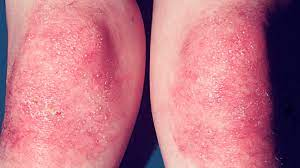

Dermatomyositis (DM)

SYMPTOMS:
The signs and symptoms of dermatomyositis can appear suddenly or develop gradually over time. The most common signs and symptoms include:
- Skin changes. A violet-colored or dusky red rash develops, most commonly on your face and eyelids and on your knuckles, elbows, knees, chest and back. The rash, which can be itchy and painful, is often the first sign of dermatomyositis.
-
Muscle weakness. Progressive muscle weakness involves the muscles closest to the trunk, such as those in your hips, thighs, shoulders, upper arms and neck. The weakness affects both the left and right sides of your body, and tends to gradually worsen.
CAUSES
The cause of dermatomyositis is unknown, but the disease has much in common with autoimmune disorders, in which your immune system mistakenly attacks your body tissues.
Genetic and environmental factors also might play a role. Environmental factors could include viral infections, sun exposure, certain medications and smoking.